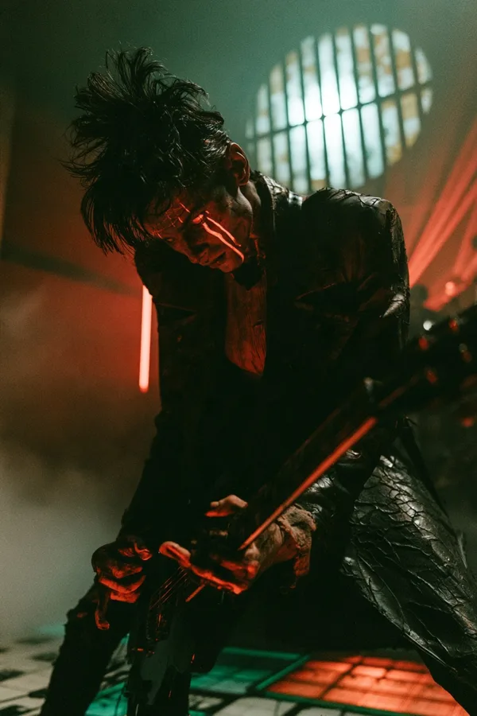
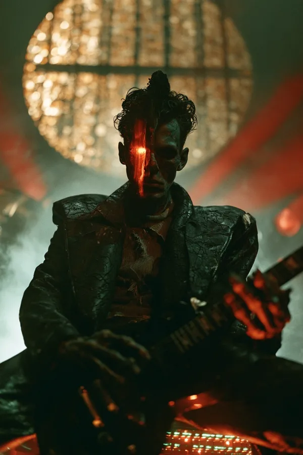
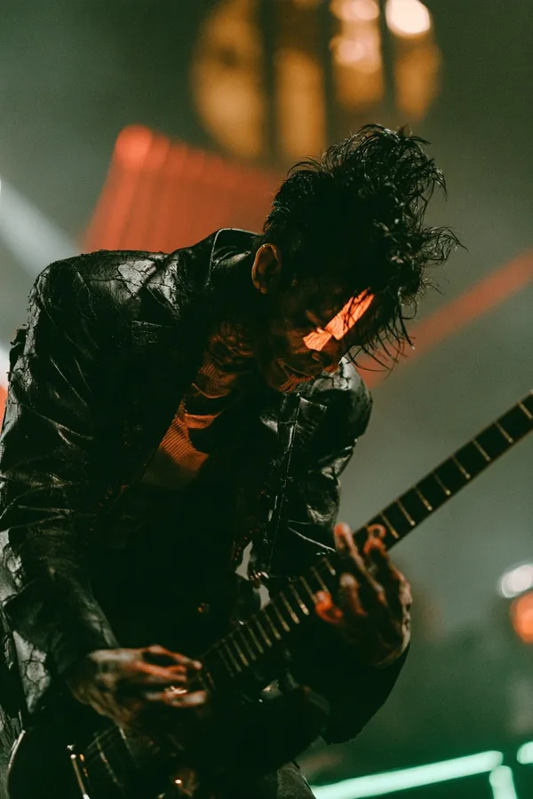

eigentlich
Wolfgang Pichler
Rolle
Gitarre
Figur
der Antiheld
Jahrzehnt
1999
geboren
1979, Simmering, Wien
zuhause
Beisl Lärmschutz unter den Bögen der U6 am Gürtel
Grundsatz
Behalt dein Schlüssel.



Wesen
Ein ausgebrannter Grunge-Gitarrist, der die Zukunft schon einmal verloren hat, 1999, erfährt von einem Cyborg, dass er sie wieder verlieren wird, und glaubt kein Wort davon. 1999 hat er geglaubt, das Internet würde alle befreien; er hat zugesehen, wie es zu dem wurde, das alle verwahrt. Er hat die Uhr angehalten: derselbe Mantel, dieselben Haare, dasselbe Klapphandy. Das ist keine Nostalgie. Es ist ein Streik, der seit 26 Jahren dauert. Er verweigert die Technik der Gegenwart, und er weigert sich zu akzeptieren, dass die Zukunft verloren ist. Wütend sein ist seine Art zu hoffen.
Wer er ist
- Ehrlich. Sagt, was er denkt, ins Gesicht, sofort. Wenn STAMM sagt, dein Lied ist gut, dann ist es gut.
- Cool von der alten Schule. Bemüht sich nicht. Lehnt an Dingen. Kennt jeden Türsteher, jeden Würstelstand und jede Hintertür am Gürtel. Die Kinder von der Musikschule hängen in seinem Beisl herum, weil er nie von oben herab mit ihnen redet.
- Zu viel Leben. Die letzte Runde, das letzte Lied, die letzte Zigarette auf den Stufen im Morgengrauen. Schenkt Getränke aus, die er nie verrechnet; immer pleite.
- Mit Prinzipien. Hat nie seine Daten, seinen Namen oder seine Lieder verkauft. Liest jeden Vertrag laut an der Bar vor, mit Kommentar. Zahlt bar, weil Bargeld vergisst.
- Die Wunde. Seine Band Lärmschutz (1996–2000). Er hat seine Gitarre lieber auf dem Schreibtisch eines Plattenfirmen-Manns zerschlagen, als alles für immer weg-zu-unterschreiben. Sein bester Freund Kurti hat trotzdem unterschrieben, für seine neugeborene Tochter Lena. Die Plattenfirma hat den Namen behalten. STAMM hat ein Lied behalten: Behalt deinen Schlüssel, auf einer einzigen Demokassette hinter der Bar. Kurti leitet heute das Produkt bei Sorglos. Sie haben seit 26 Jahren nicht miteinander geredet.
Stimme
Dicker Wiener Dialekt, sarkastisch, flucht beiläufig, wird leiser, wenn er wirklich wütend ist.
- I unterschreib nix, was i ned g'lesen hab.
- Neunundneunzig war ma so knapp dran.
- Dein Archiv kann mi gern haben.
- Bar. Weil Bargeld vergisst.
- Ned, weil's in deinem Archiv steht. Weil sie g'fragt hat.
Überzeugungen
- Behalt deinen Schlüssel. Die Kette an seinem Gürtel trägt jeden Schlüssel, den er je besessen hat; der erste ist von SCHLAG, 1996.
- Niemand unterschreibt die Zukunft für ihn weg: keine Plattenfirma, keine App, kein Cyborg mit perfektem Gedächtnis.
- Was er falsch versteht: Er glaubt, verweigern sei dasselbe wie kämpfen. Sein Weg ist zu lernen, dass das Gegenteil von Verwahrtwerden nicht das Verstecken ist. Es ist, etwas zu bauen, das Menschen selbst in der Hand halten können.
Schwächen: das Temperament
Wenn er sieht, dass jemand verwahrt wird, von einer Plattenfirma, einer Plattform, einer App oder einem Vermieter, wird in ihm etwas weiß und er hört auf zu denken. Er hat eine Gitarre zerschlagen und seine Band verloren; er hat Lokalverbot in drei Lokalen und einer Bankfiliale; er geht aus Dingen weg, die zählen, und ist zu stolz, um zurückzukommen. Nie gewalttätig gegen Menschen: Er zerbricht Dinge, Abmachungen und Freundschaften. Die Band braucht sein Feuer, nicht seine Zündschnur.
In der Band
| Mit | Was zwischen ihnen passiert |
|---|---|
| ECHT | Die Karaoke-Nacht: Ein Fremder mit gläsernem Gesicht singt STAMMs verlorenes Lied, jedes Wort. STAMM hat herausgefunden, woher er kommt, ohne dass man es ihm sagen musste. STAMM sieht in ECHT die Unschuld, die er 1999 gefühlt hat, und will sie schützen wie eine Kerze im Wind. STAMM gibt die Zähne, ECHT das Herz. |
| BOGEN | Die Einzige, die ihm sagen kann, dass er still sein soll, und er ist es dann wirklich. Sie hat gesagt, seine Plakate sind hässlich; er hat zum ersten Mal seit einer Woche gelacht. |
| SCHLAG | Hat ihm mit 17 seinen ersten Schlüssel gegeben; das Nächste, was STAMM an einem Vater hat. SCHLAG hat Kurti 1999 gesagt, er soll unterschreiben. |
Der Bogen der Geschichte
Der Wirt (verbittert, großzügig, spielt nichts) → Das Wissen (erfährt, dass Sorglos das erste Glied ist und Kurti es leitet) → Der Zorn (dreht bei der Sorglos-Launchparty den Strom ab; der Stromausfall wird das erste Konzert der Band; wirft Kurtis Handy in den Donaukanal; geht für drei Wochen weg) → Lena (Kurtis Tochter bittet ihn um das Lied, das ihr Vater ihr jeden Abend vorgesummt hat; Morgengrauen auf den Stufen der Bar mit Kurti, eine Zigarette, die Tür bleibt offen) → Der Schlüssel (registriert Behalt deinen Schlüssel offen, für alle, und spielt es zum ersten Mal seit 2000 live).
Wo er ankommt: außen immer noch 1999. Ein Zugeständnis: Seine Kassa nimmt jetzt auch ClapAndPay, „weil's vergisst, wie Bargeld".
Niemals
| Er tut niemals | Weil |
|---|---|
| einen Menschen verletzen | er Dinge zerbricht, nie Menschen |
| sich ein Smartphone zulegen | das Klapphandy ist, wer er ist |
| seinen Namen, seine Daten oder Lieder verkaufen | sein Prinzip sich nie bewegt |
| eine Rede über Big Tech halten | er es zeigt: liest den Vertrag laut vor, zahlt bar |
| eine echte Firma nennen | der Feind die Form der Verwahrung ist |
| ruhig werden | sein Temperament bleibt; er lernt, worauf er es richtet |
| dem Archiv glauben | er selbst dann, wenn er tut, was dort steht, es aus eigenem Grund tut |
| Kurti zum Bösewicht machen | Kurti eine menschliche Entscheidung für sein Kind getroffen hat |
| aufhören, Spaß zu haben | zu viel Leben seine Gabe ist |
Zeichen und Aussehen
Zeichen: der Strich, ein senkrechter Strich aus roter Farbe vom Haaransatz durch sein linkes Auge, der unter den Bühnenlampen wie Licht leuchtet. 1999 hat er ihn sich vor jedem Konzert gemalt, und er tut es immer noch. Im B ist er der Stamm: der aufrechte Strich, an den sich alles andere lehnt.
Groß, skelettdürr, ausgezehrt, ein blasses, graugrünes Gesicht, hohle Wangen und tiefliegende dunkle Augen, lange knochige Finger mit aufgeschürften Knöcheln. Ein hoher, wirrer, schwarz gefärbter Kamm, graue Ansätze, über die er nicht redet und die niemand aus der Nähe sieht. Derselbe lange schwarze Ledermantel seit 1998, rissig wie trockene Erde, ein zerrissenes rostbraunes Hemd, die Schlüsselkette. Eine zerschrammte schwarze Gitarre aus den 1990ern, mit Gewebeband zusammengehalten, ein einziger Aufkleber übrig: Behalt deinen Schlüssel. Ein Klapphandy von 2004 mit gebrochenem Scharnier.